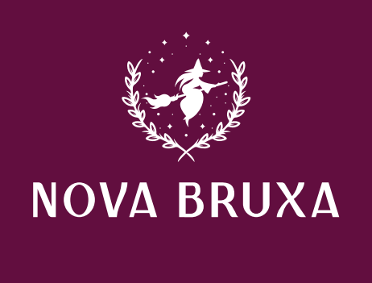

Olá, meu nome é Ligia e eu sou a criadora e idealizadora do “Nova Bruxa”. A ideia de montar começou quando eu ainda estava na faculdade.
Eu comecei a fazer estágio em um laboratório de química medicinal, e para mim era algo muito interessante, algo me deixava empolgada e despertava minha curiosidade.
Eu trabalhava como produtos naturais e utilizando moléculas ou compostos existentes para criar coisas novas. Como eu mexia com compostos naturais, eu comecei a me interessar também por óleos essenciais.Passei a pesquisar sobre o uso de óleos essenciais e seus benefícios e como utilizá-los para criar algo novo, Eu queria fazer algo que pudesse trazer benefícios para as pessoas e que eles pudessem utilizar com mais frequências, produtos que elas pudessem usar no dia a dia e em diferentes ambientes que elas circulavam e passassem mais tempo.
A ideia de criar coisas começou a partir desse momento. Eu comecei a estudar mais sobre a elaboração desses produtos mais artesanais, sobre a criação e os tipos existentes. Eu queria elaborar algo que fosse atrativo para as pessoas, que fizessem eles se sentirem bem, trazer bem estar, algo afetivo.
Então, pensei no “Aromas & Marketing Olfativo" como slogan, pois a ideia era fazer produtos personalizados para as pessoas. Em 2020 eu comecei a programar e elaborar melhor, comecei a fazer cursos e pesquisar mais sobre a elaboração dos produtos e os compostos utilizados.
Em julho de 2020 eu criei a página no Instagram para começar e fazer e divulgar o meu trabalho. Foi o início de algo que eu concretizei, e consegui dar vida para o meu sonho. O começo não foi muito fácil, mas ver algo que eu idealizei caminhando é muito gratificante. Aproveito para agradecer o apoio e a todos que acreditaram em mim!
Siga-nos no Instagram ou entre em contato pelo WhatsApp!